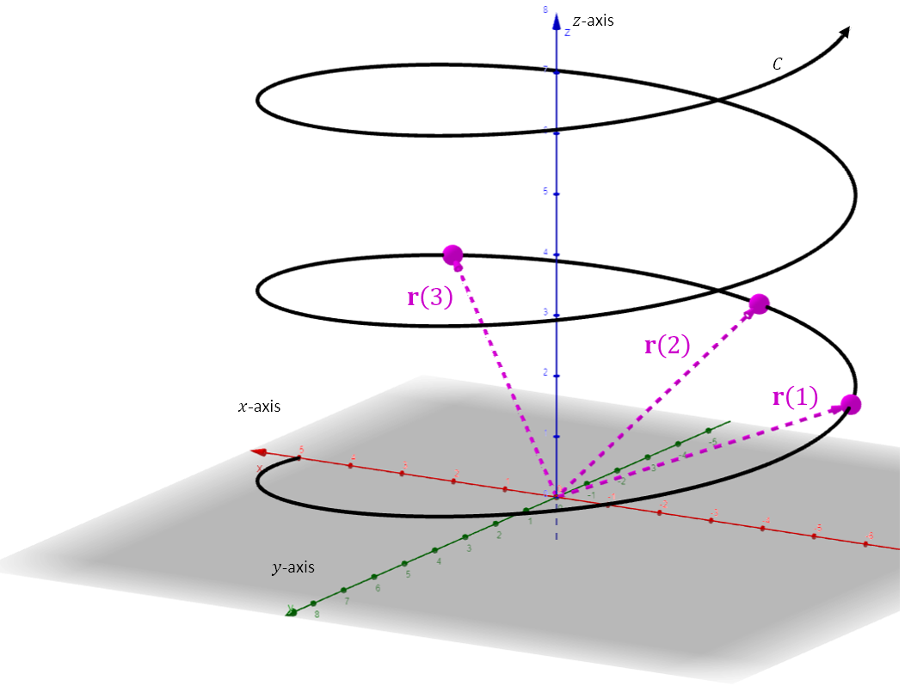

Lesson 6: Vector-Valued Functions
A vector-valued function of a real variable is a function whose domain is a subset of the real numbers and whose range is a set of vectors. We use the notations below.
We will be interested in the curve \(C\) traced out by the vectors in standard position. As illustrated in the figure, the curve has direction, or orientation.

An Example
Given the below vector-valued function, find \(\mathbf{r}(2)\).
Evaluate the function for \(t = 2\).
An Example
State the domain of the below vector-valued function.
Idea: The domain is all values of \(t\) for which every component is defined.
Because of the expression for the \(y\)-component of the vector, we must exclude zero from the domain of \(\vec{r}(t)\). The domain of \(\vec{r}(t)\) is all real numbers except zero, \((-\infty, 0) \cup (0, \infty)\).